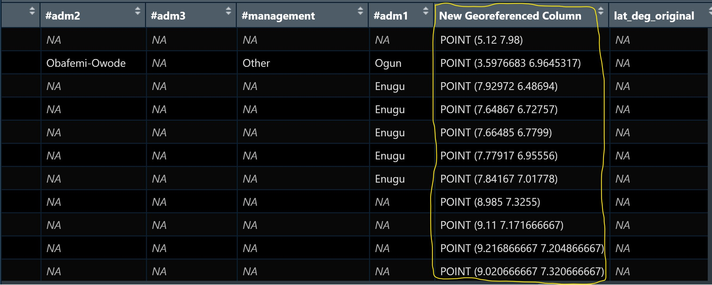
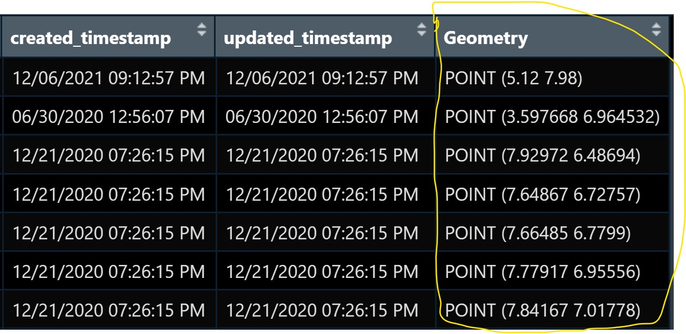
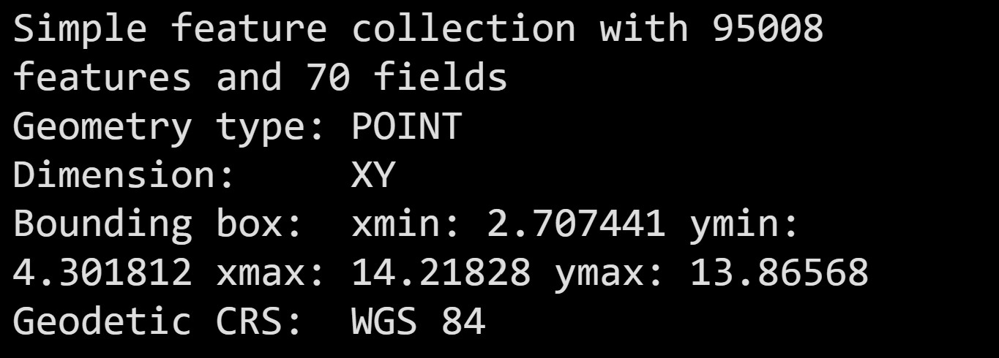
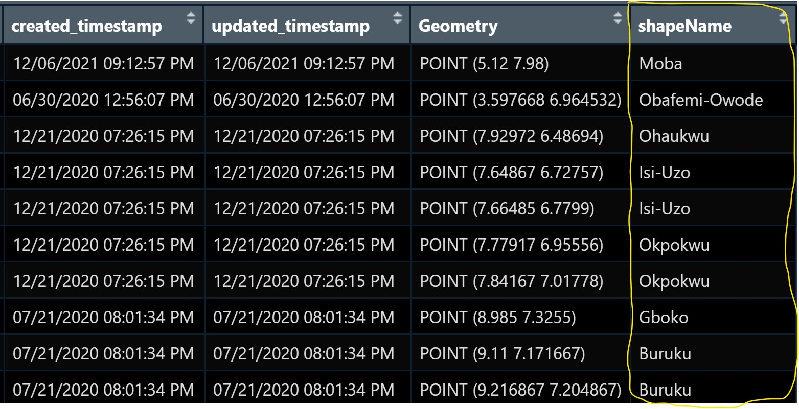
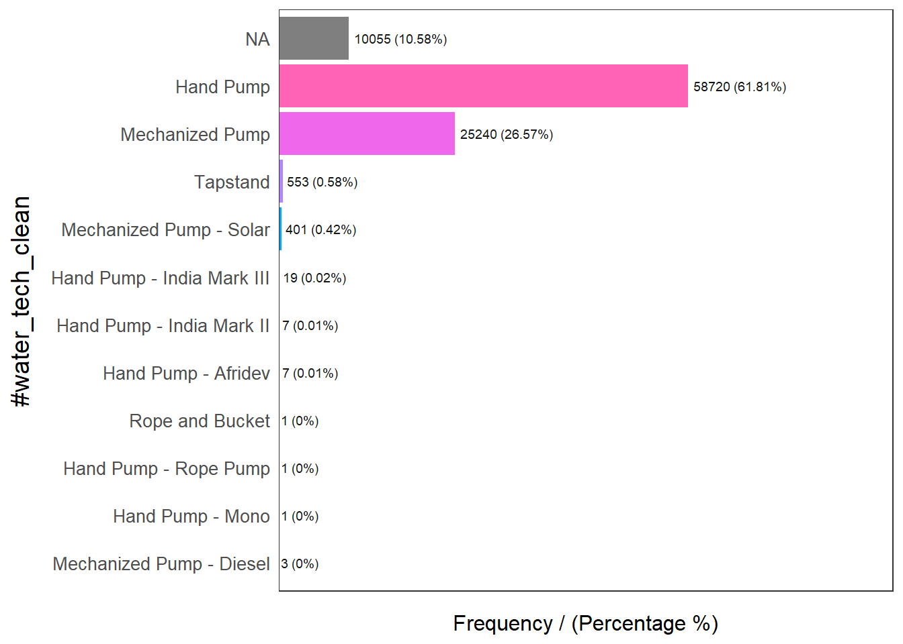
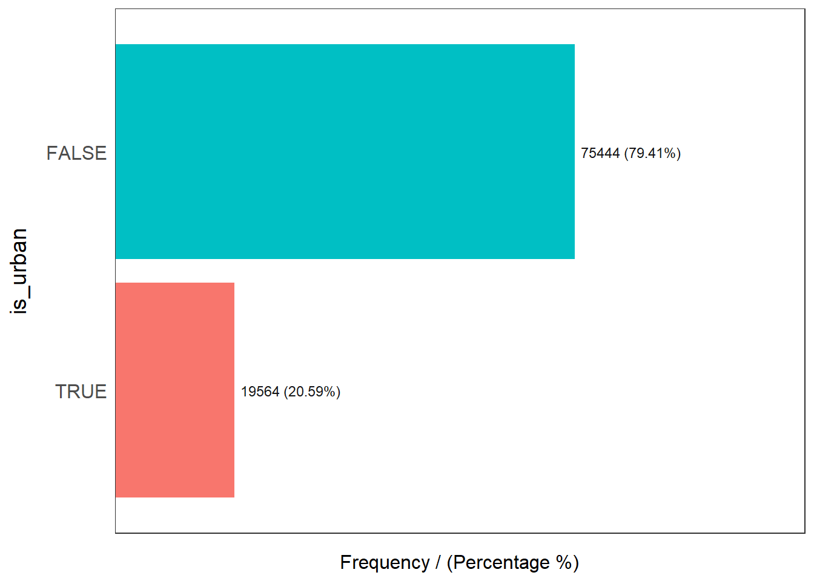
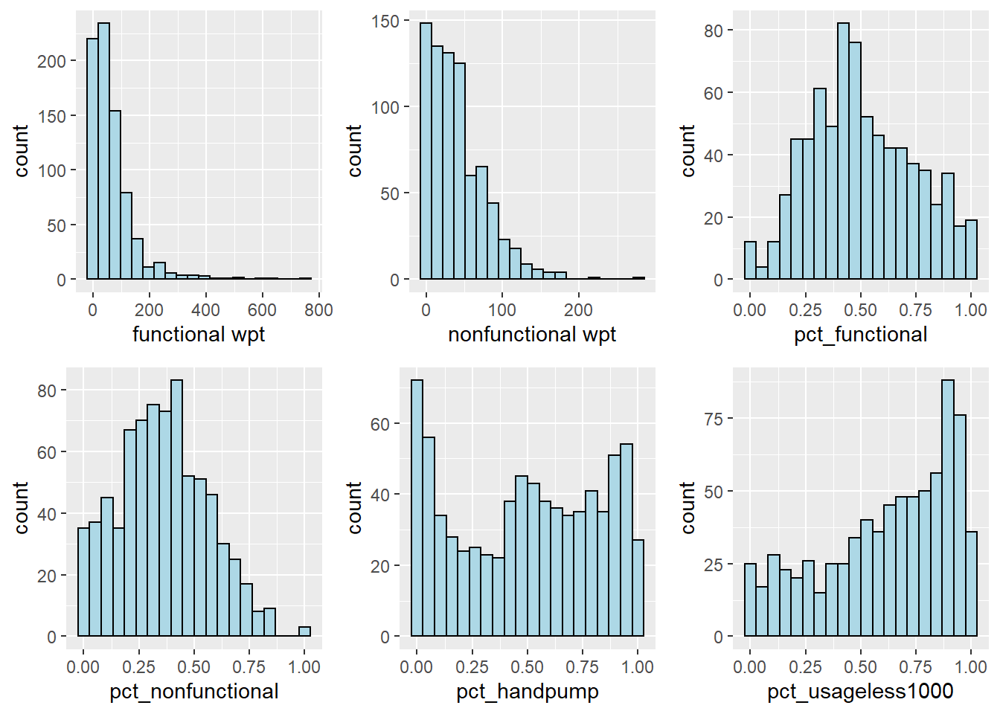

pacman::p_load(rgdal, spdep, tmap, sf, ClustGeo,
ggpubr, cluster, factoextra, NbClust,
heatmaply, corrplot, psych, tidyverse, funModeling)Take-home Exercise 2
Overview
Getting Started
sf for importing and processing geospatial data,
tidyverse for importing and processing non-spatial data. In this exercise, readr package will be used for importing wkt data and dplyr package will be used to wrangling the data.
Data Import
In this study, two data sets will be used:
Importing water point data
First, we are going to import the water point data into R environment.
wp_nga <- read_csv("aspatial/WPdx.csv") %>%
filter(`#clean_country_name` == "Nigeria")Warning: One or more parsing issues, see `problems()` for detailsRows: 406566 Columns: 70
── Column specification ────────────────────────────────────────────────────────
Delimiter: ","
chr (43): #source, #report_date, #status_id, #water_source_clean, #water_sou...
dbl (23): row_id, #lat_deg, #lon_deg, #install_year, #fecal_coliform_value, ...
lgl (4): #rehab_year, #rehabilitator, is_urban, latest_record
ℹ Use `spec()` to retrieve the full column specification for this data.
ℹ Specify the column types or set `show_col_types = FALSE` to quiet this message.Thing to learn from the code chunk above:
The original file name is called Water_Point_Data_Exchange_-_PlusWPdx.csv, it has been rename to WPdx.csv for easy encoding.
Instead of using
read.csv()of Base R to import the csv file into R,read_csv()is readr package is used. This is because during the initial data exploration, we notice that there is at least one field name with space between the field name (ie. New Georeferenced Column)The data file contains water point data of many countries. In this study, we are interested on water point in Nigeria on. Hence,
filter()of dplyr is used to extract out records belong to Nigeria only.
Convert wkt data
After the data are imported into R environment, it is a good practice to review both the data structure and the data table if it is in tibble data frame format in R Studio.
Notice that the newly imported tibble data frame (i.e. wp_nga) contains a field called New Georeferenced Column which represent spatial data in a textual format. In fact, this kind of text file is popularly known as Well Known Text in short wkt.

Two steps will be used to convert an asptial data file in wkt format into a sf data frame by using sf.
First, st_as_sfc() of sf package is used to derive a new field called Geometry as shown in the code chunk below.
wp_nga$Geometry = st_as_sfc(wp_nga$`New Georeferenced Column`)If you open wp_nga data frame and scroll to the last field now, you will see a new field called Geometry has been added as shown below.

Next, st_sf() will be used to convert the tibble data frame into sf data frame.
wp_sf <- st_sf(wp_nga, crs=4326) When the process completed, a new sf data frame called wp_sf will be created.

Importing Nigeria LGA level boundary data
For the purpose of this exercise, shapefile downloaded from geoBoundaries portal will be used.
nga <- st_read(dsn = "geospatial",
layer = "geoBoundaries-NGA-ADM2",
crs = 4326) %>%
select(shapeName)Reading layer `geoBoundaries-NGA-ADM2' from data source
`C:\chenfx91\ISSS624\Take-home_Ex\Take-home_Ex2\geospatial'
using driver `ESRI Shapefile'
Simple feature collection with 774 features and 5 fields
Geometry type: MULTIPOLYGON
Dimension: XY
Bounding box: xmin: 2.668534 ymin: 4.273007 xmax: 14.67882 ymax: 13.89442
Geodetic CRS: WGS 84Point in Polygon Overlay
Although wp_sf sf data frame consists of a field called #clean_adm2 which by right should provides the LGA name of the water point located. However, it is always a good practice to be more caution when dealing with data accuracy.
In this section, we are going to use a geoprocessing function (or commonly know as GIS analysis) called point-in-polygon overlay to transfer the attribute information in nga sf data frame into wp_sf data frame.
wp_sf <- st_join(wp_sf, nga)Notice that a new field called shapeName has been added into wp_sf sf data frame. as shown below.

Data Wrangling
EDA
In the code chunk below, freq() of funModeling package is used to display the distribution of #status_clean & #water_tech_clean field in wp_sf.
freq(data = wp_sf,
input = '#status_clean')Warning: `guides(<scale> = FALSE)` is deprecated. Please use `guides(<scale> =
"none")` instead.
#status_clean frequency percentage cumulative_perc
1 Functional 45883 48.29 48.29
2 Non-Functional 29385 30.93 79.22
3 <NA> 10656 11.22 90.44
4 Functional but needs repair 4579 4.82 95.26
5 Non-Functional due to dry season 2403 2.53 97.79
6 Functional but not in use 1686 1.77 99.56
7 Abandoned/Decommissioned 234 0.25 99.81
8 Abandoned 175 0.18 99.99
9 Non functional due to dry season 7 0.01 100.00freq(data = wp_sf,
input = '#water_tech_clean')Warning: `guides(<scale> = FALSE)` is deprecated. Please use `guides(<scale> =
"none")` instead.
#water_tech_clean frequency percentage cumulative_perc
1 Hand Pump 58720 61.81 61.81
2 Mechanized Pump 25240 26.57 88.38
3 <NA> 10055 10.58 98.96
4 Tapstand 553 0.58 99.54
5 Mechanized Pump - Solar 401 0.42 99.96
6 Hand Pump - India Mark III 19 0.02 99.98
7 Hand Pump - Afridev 7 0.01 99.99
8 Hand Pump - India Mark II 7 0.01 100.00
9 Mechanized Pump - Diesel 3 0.00 100.00
10 Hand Pump - Mono 1 0.00 100.00
11 Hand Pump - Rope Pump 1 0.00 100.00
12 Rope and Bucket 1 0.00 100.00summary(wp_sf$usage_capacity) Min. 1st Qu. Median Mean 3rd Qu. Max.
50.0 300.0 300.0 488.6 1000.0 1000.0 freq(data = wp_sf,
input = 'is_urban')Warning: `guides(<scale> = FALSE)` is deprecated. Please use `guides(<scale> =
"none")` instead.
is_urban frequency percentage cumulative_perc
1 FALSE 75444 79.41 79.41
2 TRUE 19564 20.59 100.00Extracting Water Point Data
wpt_functional <- wp_sf %>%
filter(`#status_clean` %in%
c('Functional',
'Functional but not in use',
'Functional but needs repair'))
wpt_nonfunctional <- wp_sf %>%
filter(`#status_clean` %in%
c('Non-Functional',
'Non-Functional due to dry season',
'Abandoned/Dcommissioned',
'Abandoned',
'Non functional due to dry season'))
wpt_handpump <- wp_sf %>%
filter(`#water_tech_clean` %in%
c('Hand Pump',
'Hand Pump - India Mark III',
'Hand Pump - India Mark II',
'Hand Pump - Afridev',
'Hand Pump - Rope Pump',
'Hand Pump - Mono'))
wpt_usageless1000 <- wp_sf %>%
filter(`usage_capacity` %in%
0:999)
wpt_rural <- wp_sf %>%
filter(is_urban %in%
c('FALSE'))Performing Point-in Polygon Count
st_crs(nga)Coordinate Reference System:
User input: EPSG:4326
wkt:
GEOGCRS["WGS 84",
DATUM["World Geodetic System 1984",
ELLIPSOID["WGS 84",6378137,298.257223563,
LENGTHUNIT["metre",1]]],
PRIMEM["Greenwich",0,
ANGLEUNIT["degree",0.0174532925199433]],
CS[ellipsoidal,2],
AXIS["geodetic latitude (Lat)",north,
ORDER[1],
ANGLEUNIT["degree",0.0174532925199433]],
AXIS["geodetic longitude (Lon)",east,
ORDER[2],
ANGLEUNIT["degree",0.0174532925199433]],
USAGE[
SCOPE["Horizontal component of 3D system."],
AREA["World."],
BBOX[-90,-180,90,180]],
ID["EPSG",4326]]st_crs(wp_sf)Coordinate Reference System:
User input: EPSG:4326
wkt:
GEOGCRS["WGS 84",
DATUM["World Geodetic System 1984",
ELLIPSOID["WGS 84",6378137,298.257223563,
LENGTHUNIT["metre",1]]],
PRIMEM["Greenwich",0,
ANGLEUNIT["degree",0.0174532925199433]],
CS[ellipsoidal,2],
AXIS["geodetic latitude (Lat)",north,
ORDER[1],
ANGLEUNIT["degree",0.0174532925199433]],
AXIS["geodetic longitude (Lon)",east,
ORDER[2],
ANGLEUNIT["degree",0.0174532925199433]],
USAGE[
SCOPE["Horizontal component of 3D system."],
AREA["World."],
BBOX[-90,-180,90,180]],
ID["EPSG",4326]]nga_derived <- nga %>%
mutate('total wpt' = lengths(st_intersects(nga,wp_sf))) %>%
mutate('functional wpt' = lengths(st_intersects(nga,wpt_functional))) %>%
mutate('nonfunctional wpt' = lengths(st_intersects(nga,wpt_nonfunctional))) %>%
mutate('handpump wpt' = lengths(st_intersects(nga,wpt_handpump))) %>%
mutate('usageless1000 wpt' = lengths(st_intersects(nga,wpt_usageless1000))) %>%
mutate('rural wpt' = lengths(st_intersects(nga,wpt_rural)))Saving the Analytical Data Table
class(nga_derived$`functional wpt`)[1] "integer"nga_derived <- nga_derived %>%
mutate(`pct_functional` = `functional wpt`/`total wpt`) %>%
mutate(`pct_nonfunctional` = `nonfunctional wpt`/`total wpt`) %>%
mutate(`pct_handpump` = `handpump wpt`/`total wpt`) %>%
mutate(`pct_usageless1000` = `usageless1000 wpt`/`total wpt`) %>%
mutate(`pct_rural` = `rural wpt`/`total wpt`)Exploratory Data Analysis
EDA using statistical graphics
Functionalwp <- ggplot(nga_derived,
aes(x=`functional wpt`)) +
geom_histogram(bins=20,
color="black",
fill="light blue")
NonFunctionalwp <- ggplot(nga_derived,
aes(x=`nonfunctional wpt`)) +
geom_histogram(bins=20,
color="black",
fill="light blue")
PctFunctionalwp <- ggplot(nga_derived,
aes(x=`pct_functional`)) +
geom_histogram(bins=20,
color="black",
fill="light blue")
PctNonFunctionalwp <- ggplot(nga_derived,
aes(x=`pct_nonfunctional`)) +
geom_histogram(bins=20,
color="black",
fill="light blue")
PctHandpump <- ggplot(nga_derived,
aes(x=`pct_handpump`)) +
geom_histogram(bins=20,
color="black",
fill="light blue")
Pctusageless1000 <- ggplot(nga_derived,
aes(x=`pct_usageless1000`)) +
geom_histogram(bins=20,
color="black",
fill="light blue")
PctRural <- ggplot(nga_derived,
aes(x=`pct_rural`)) +
geom_histogram(bins=20,
color="black",
fill="light blue")ggarrange(Functionalwp, NonFunctionalwp, PctFunctionalwp, PctNonFunctionalwp,
PctHandpump, Pctusageless1000, PctRural,
ncol = 3,
nrow = 2)Warning: Removed 13 rows containing non-finite values (stat_bin).
Removed 13 rows containing non-finite values (stat_bin).
Removed 13 rows containing non-finite values (stat_bin).
Removed 13 rows containing non-finite values (stat_bin).
Removed 13 rows containing non-finite values (stat_bin).$`1`
$`2`
attr(,"class")
[1] "list" "ggarrange"